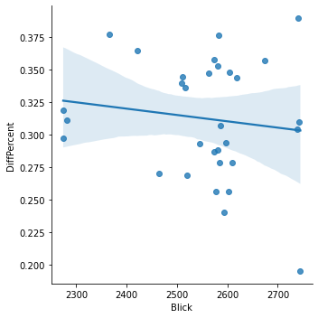

Tops and flops of the month
In a nutshell: what was the best and worst day of the month in the competition for visits between Blick and 20 Minuten?
August 2021 daily visitors
In a nutshell: what was the best and worst day of the month in the competition for visits between Blick and 20 Minuten?
Woaw!
On 01.08.2021, Blick was closest to 20 Minuten, with a 19% difference in visits only (that's 11% smaller than average).
This day, we had 2,745,000 visits (vs 3,338,300 for 20 Minuten).
This was our #1 day of the Month in terms of visits.
These were the most trending Twitter topics in Switzerland on that day:
#HungarianGP, Bottas, #1August, #SwissNationalDay, #SwissNationalDay
Well, not so good…
On 16.08.2021, Blick was really distanciated by 20 Minuten, with a 38% difference in visits (that's 7% more than average). This is our worst day in the battle.
This day, we had 2,740,100 visits (vs 4,064,000 for 20 Minuten).
This was our #3 day of the Month in terms of visits.
These were the most trending Twitter topics on that day:
#Afghanistan, Taliban, #Kabul, Biden, Westen
For each day, the top news of the days for Switzerland, according to a service called Gnews.io.
Unfortunately, we are not so sure the data is reliable, but the very reliable Google doesn't provide a history of top news.
Linear correlation between # of visits and gap between Blick and 20 Minutes?

Pearson's R: (-0.1344948094410576, 0.4706941622763152)